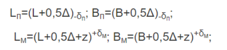

Исполнительные размеры матриц Lм в мм и пуансонов Lп в мм вытяжных штампов на последней операции подсчитывать по следующим формулам:
а) при наличии допуска на наружный размер детали (черт. 5.2.1)
Радиусы угловых участков (в плане) матрицы rум в мм и пуансона rуп в мм штампов для вытяжки деталей прямоугольной формы (черт. 189) подсчитываются по формулам:
б) при наличии допуска на внутренний размер детали (черт. 190)
Радиусы угловых участков (в плане) пуансона rуп в мм и матрицы rум в мм штампов для вытяжки деталей прямоугольной формы (черт. 5.2.2) подсчитываются по формулам: